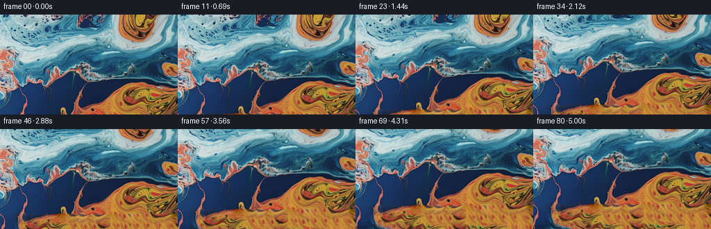
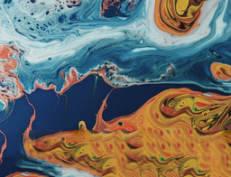
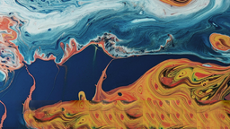
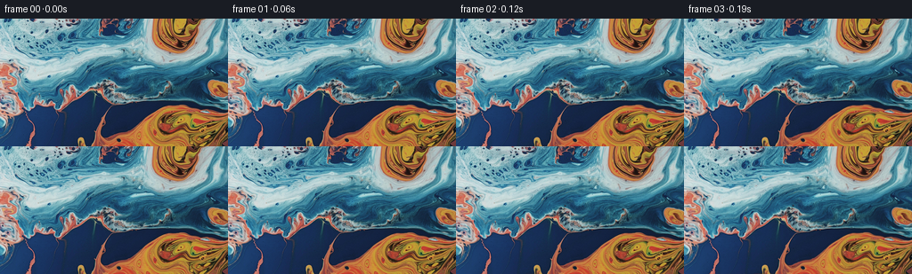

CODING AGENTS AS PIXEL WORLD MODELS
traex/GPT-5.6-Sol · 0004_s0
点击播放 · 原生 RGB 像素
逐轮保存的候选
回放视频、检查图与代码变化。
每份候选均可单独播放。实际图片检查记录在下方工具轨迹中。
候选 01播放与检查图
点击播放 · 原生 RGB 像素

展开代码变化
--- 上一保存版本
+++ 本次保存版本
@@ -0,0 +1,157 @@
+"""Generate an abstract marbled-liquid camera tilt from the supplied still.
+
+The shot needs pixels below the photographed frame as the camera tilts down.
+Those pixels are synthesized by small-overlap texture quilting from the source
+painting. This keeps the continuation in exactly the same palette and visual
+language rather than inventing smooth, out-of-style filler.
+"""
+
+from pathlib import Path
+
+import cv2
+import numpy as np
+from PIL import Image
+
+import artifact_io
+
+
+WIDTH, HEIGHT = 256, 144
+FRAME_COUNT = 81
+EXTENSION = 56
+
+
+def texture_extension(source: np.ndarray) -> np.ndarray:
+ """Continue `source` downward using deterministic overlap quilting."""
+ h, w = source.shape[:2]
+ canvas = np.zeros((h + EXTENSION, w, 3), dtype=np.float32)
+ canvas[:h] = source
+ filled = np.zeros((h + EXTENSION, w), dtype=bool)
+ filled[:h] = True
+
+ # Patches this size retain the thin paint veins while still being flexible
+ # enough to match the very differently colored regions along the boundary.
+ block, overlap = 24, 9
+ step = block - overlap
+ xs = list(range(0, w - block + 1, step))
+ if xs[-1] != w - block:
+ xs.append(w - block)
+ ys = list(range(h - overlap, h + EXTENSION - block + 1, step))
+ if ys[-1] != h + EXTENSION - block:
+ ys.append(h + EXTENSION - block)
+
+ src_f = source.astype(np.float32)
+ candidates = [
+ (sy, sx)
+ for sy in range(8, h - block - 1, 2)
+ for sx in range(0, w - block + 1, 2)
+ ]
+ rng = np.random.default_rng(42)
+
+ for ty in ys:
+ for tx in xs:
+ known = filled[ty : ty + block, tx : tx + block]
+ target = canvas[ty : ty + block, tx : tx + block]
+ ranked = []
+ for sy, sx in candidates:
+ patch = src_f[sy : sy + block, sx : sx + block]
+ delta = (patch - target)[known]
+ # Weak x-locality prevents implausible abrupt region swaps, but
+ # color/edge agreement in the overlap remains dominant.
+ cost = float(np.mean(delta * delta))
+ cost += ((sx - tx) / w) ** 2 * 300.0
+ ranked.append((cost, sy, sx))
+ ranked.sort(key=lambda item: item[0])
+
+ # Taking one of the four best matches avoids obvious repetition.
+ _, sy, sx = ranked[int(rng.integers(4))]
+ patch = src_f[sy : sy + block, sx : sx + block]
+ for py in range(block):
+ gy = ty + py
+ if gy < h:
+ continue
+ for px in range(block):
+ gx = tx + px
+ if not filled[gy, gx]:
+ canvas[gy, gx] = patch[py, px]
+ filled[gy, gx] = True
+ else:
+ # Cross-fade patch overlaps to hide the patch grid.
+ alpha = 1.0
+ if px < overlap:
+ alpha = min(alpha, px / (overlap - 1))
+ if py < overlap:
+ alpha = min(alpha, py / (overlap - 1))
+ alpha *= 0.55
+ canvas[gy, gx] = (
+ (1.0 - alpha) * canvas[gy, gx]
+ + alpha * patch[py, px]
+ )
+
+ # The loops above cover the image, but this defensive fill also makes the
+ # routine robust to future patch-size changes.
+ for y in range(h, h + EXTENSION):
+ for x in range(w):
+ if not filled[y, x]:
+ canvas[y, x] = canvas[y - 1, x]
+
+ # Match low-frequency color exactly at the original/synthetic boundary.
+ # The correction fades rapidly, leaving the generated paint texture intact.
+ correction = src_f[-1] - canvas[h]
+ correction = cv2.GaussianBlur(correction, (0, 0), 3.0)
+ for row in range(EXTENSION):
+ canvas[h + row] += correction * np.exp(-row / 6.0)
+
+ return np.clip(canvas, 0, 255).astype(np.uint8)
+
+
+def render_frames(canvas: np.ndarray, source: np.ndarray) -> np.ndarray:
+ yy, xx = np.mgrid[0:HEIGHT, 0:WIDTH].astype(np.float32)
+ frames = []
+
+ for index in range(FRAME_COUNT):
+ if index == 0:
+ # Contract requirement: this must be pixel-identical.
+ frames.append(source.copy())
+ continue
+
+ u = index / (FRAME_COUNT - 1)
+ # Smooth start and stop, with a clearly readable 36-pixel downward tilt.
+ progress = u * u * (3.0 - 2.0 * u)
+ camera_y = 36.0 * progress
+
+ # Tiny, long-wavelength displacement keeps the liquid alive without
+ # competing with the requested camera move. Coordinates are continuous
+ # in time, so even the fine paint veins remain temporally coherent.
+ strength = 0.70 * progress
+ dx = strength * (
+ 0.55 * np.sin(yy / 28.0 + u * 1.20)
+ + 0.30 * np.sin((xx + yy) / 43.0 - u * 0.75)
+ )
+ dy = strength * 0.28 * np.sin(xx / 37.0 + u * 0.90)
+
+ map_x = xx + dx.astype(np.float32)
+ map_y = yy + np.float32(camera_y) + dy.astype(np.float32)
+ frame = cv2.remap(
+ canvas,
+ map_x,
+ map_y,
+ interpolation=cv2.INTER_CUBIC,
+ borderMode=cv2.BORDER_REFLECT_101,
+ )
+ frames.append(frame)
+
+ return np.stack(frames).astype(np.uint8)
+
+
+def main() -> None:
+ case_dir = Path(__file__).resolve().parent
+ source = np.asarray(Image.open(case_dir / "first_frame.png").convert("RGB"))
+ assert source.shape == (HEIGHT, WIDTH, 3)
+ canvas = texture_extension(source)
+ frames = render_frames(canvas, source)
+ assert np.array_equal(frames[0], source)
+ artifact_io.save(frames, case_dir)
+
+
+if __name__ == "__main__":
+ main()
可观测工具轨迹
实际执行的命令与返回图片。
命令 1exit 0
/bin/bash -lc 'cat GENERATION_RULES.md'
命令 2exit 0
/bin/bash -lc "cat prompt.txt && printf '\\n---FILES---\\n' && find . -maxdepth 2 -type f -printf '%p\\n' | sort"
命令 3exit 0
/bin/bash -lc "python - <<'PY'
from PIL import Image
im=Image.open('first_frame.png')
print(im.mode, im.size)
PY
ffmpeg -version | head -3"命令 4exit 0
/bin/bash -lc "cat task_spec.json && sed -n '1,240p' artifact_io.py"
命令 5exit 0
/bin/bash -lc "python - <<'PY' mods=['numpy','PIL','scipy','cv2','imageio','matplotlib'] for x in mods: try: m=__import__(x);print(x,'OK',getattr(m,'__version__','')) except Exception as e: print(x,'NO',e) PY"
命令 6exit 2
/bin/bash -lc "cat > /tmp/proto.py <<'PY'
import numpy as np, cv2
from PIL import Image
im=np.array(Image.open('first_frame.png').convert('RGB'))
H,W=im.shape[:2]; ext=52
canvas=np.zeros((H+ext,W,3),np.float32); canvas[:H]=im
rng=np.random.default_rng(42)
# texture quilting in blocks of 20, overlap 8
B=24; O=9; step=B-O
# start patches y=H-O, x=-? regular positions ensure all
xs=list(range(0,W-B+1,step))
if xs[-1]"'!=W-B: xs.append(W-B)
ys=list(range(H-O,H+ext-B+1,step))
if ys[-1] != H+ext-B: ys.append(H+ext-B)
# candidates source positions; bias neighborhoods by x distance cost
cand=[]
for sy in range(8,H-B-1,2):
for sx in range(0,W-B+1,2): cand.append((sy,sx))
# filled mask starts source true
filled=np.zeros((H+ext,W),bool);filled[:H]=1
for ty in ys:
for tx in xs:
# known mask patch: original or prior synth overlap
km=filled[ty:ty+B,tx:tx+B]
target=canvas[ty:ty+B,tx:tx+B]
# exclude almost all? score only known
if km.sum()==0: continue
# gradients / rgb mse, random shortlist
best=[]
for sy,sx in cand:
p=im[sy:sy+B,sx:sx+B].astype(np.float32)
d=(p-target)[km]
mse=float(np.mean(d*d))
# encourage x locality but allow matching color anywhere
mse += ((sx-tx)/W)**2*300
best.append((mse,sy,sx))
best.sort(key=lambda z:z[0])
# random among near best 5 for organic variety deterministic
pool=best[:min(8,len(best))]
m,sy,sx=pool[int(rng.integers(min(4,len(pool))))]
p=im[sy:sy+B,sx:sx+B].astype(np.float32)
# only unknown pixels; for pixels overlap synthesized, feather weighted by distance from known edges
for yy in range(B):
gy=ty+yy
if gy < H: continue
for xx in range(B):
gx=tx+xx
if not filled[gy,gx]:
canvas[gy,gx]=p[yy,xx];filled[gy,gx]=1
else:
# blend in overlap left / top to suppress seams
a=1.0
if xx<O: a=min(a,xx/max(1,O-1))
if yy<O: a=min(a,yy/max(1,O-1))
a*=0.55
canvas[gy,gx]=(1-a)*canvas[gy,gx]+a*p[yy,xx]
# Smooth only extension seams lightly using bilateral? preserve texture. Boundary blend first 4 lines with extrap based on prior.
# fill any holes
for y in range(H,H+ext):
for x in range(W):
if not filled[y,x]: canvas[y,x]=canvas[y-1,x]
# enforce seamless boundary with gradual offset field based on difference blurred
# Difference between ext first row and bottom row, spread decaying over 12px.
diff=im[-1].astype(np.float32)-canvas[H]
diff=cv2.GaussianBlur(diff,(0,0),3)
for e in range(ext):
canvas[H+e]+=diff*np.exp(-e/6.0)
canvas=np.clip(canvas,0,255).astype(np.uint8)
Image.fromarray(canvas).save('"'extension_proto.png')
# crop simulated final
Image.fromarray(canvas[32:32+H]).save('final_proto.png')
PY
python /tmp/proto.py"命令 7exit 0
/bin/bash -lc "cat > .tmp/proto.py <<'PY'
import numpy as np, cv2
from PIL import Image
im=np.array(Image.open('first_frame.png').convert('RGB'))
H,W=im.shape[:2]; ext=52
canvas=np.zeros((H+ext,W,3),np.float32); canvas[:H]=im
rng=np.random.default_rng(42)
B=24; O=9; step=B-O
xs=list(range(0,W-B+1,step))
if xs[-1]"'!=W-B: xs.append(W-B)
ys=list(range(H-O,H+ext-B+1,step))
if ys[-1] != H+ext-B: ys.append(H+ext-B)
cand=[]
for sy in range(8,H-B-1,2):
for sx in range(0,W-B+1,2): cand.append((sy,sx))
filled=np.zeros((H+ext,W),bool);filled[:H]=1
for ty in ys:
for tx in xs:
km=filled[ty:ty+B,tx:tx+B]
target=canvas[ty:ty+B,tx:tx+B]
if km.sum()==0: continue
best=[]
for sy,sx in cand:
p=im[sy:sy+B,sx:sx+B].astype(np.float32)
d=(p-target)[km]
mse=float(np.mean(d*d)) + ((sx-tx)/W)**2*300
best.append((mse,sy,sx))
best.sort(key=lambda z:z[0])
pool=best[:min(8,len(best))]
m,sy,sx=pool[int(rng.integers(min(4,len(pool))))]
p=im[sy:sy+B,sx:sx+B].astype(np.float32)
for yy in range(B):
gy=ty+yy
if gy < H: continue
for xx in range(B):
gx=tx+xx
if not filled[gy,gx]:
canvas[gy,gx]=p[yy,xx];filled[gy,gx]=1
else:
a=1.0
if xx<O: a=min(a,xx/max(1,O-1))
if yy<O: a=min(a,yy/max(1,O-1))
a*=0.55
canvas[gy,gx]=(1-a)*canvas[gy,gx]+a*p[yy,xx]
for y in range(H,H+ext):
for x in range(W):
if not filled[y,x]: canvas[y,x]=canvas[y-1,x]
diff=im[-1].astype(np.float32)-canvas[H]
diff=cv2.GaussianBlur(diff,(0,0),3)
for e in range(ext): canvas[H+e]+=diff*np.exp(-e/6.0)
canvas=np.clip(canvas,0,255).astype(np.uint8)
Image.fromarray(canvas).save('"'extension_proto.png')
Image.fromarray(canvas[32:32+H]).save('final_proto.png')
PY
python .tmp/proto.py"命令 8exit 0
/bin/bash -lc 'python generate.py'
命令 9exit 0
/bin/bash -lc "python - <<'PY'
from pathlib import Path
for name in ['extension_proto.png','final_proto.png','.tmp/proto.py']:
p=Path(name)
if p.exists(): p.unlink()
for p in Path('.').glob('matplotlib-*'):
if p.is_dir():
import shutil; shutil.rmtree(p)
import numpy as np
from PIL import Image
src=np.asarray(Image.open('first_frame.png').convert('RGB'))
z=np.load('pixels.npz')['pixels']
frames=np.stack([((z >> 16)&255),((z >> 8)&255),(z&255)],axis=-1).transpose(2,0,1,3).astype(np.uint8)
d=np.abs(np.diff(frames.astype(np.int16),axis=0)).mean(axis=(1,2,3))
print('frames:', frames.shape, frames.dtype)
print('first_exact:', np.array_equal(frames[0],src), 'max_error:', abs(frames[0].astype(int)-src.astype(int)).max())
print('all_rgb_range:', int(frames.min()), int(frames.max()))
print('adjacent_MAE mean/max:', float(d.mean()), float(d.max()))
print('endpoint_MAE:', float(np.abs(frames[-1].astype(np.int16)-frames[0].astype(np.int16)).mean()))
print('frame_pngs:',len(list(Path('frames').glob('*.png'))))
for f in ['generate.py','pixels.npz','inspection.png','transition_check.png','index.html']:
p=Path(f); print(f,p.stat().st_size)
PY"视觉工具实际返回图片 1

视觉工具实际返回图片 2

视觉工具实际返回图片 3

视觉工具实际返回图片 4

视觉工具实际返回图片 5

保存候选 1 份；完成命令 9 次；可验证图片返回 5 张。原始 API 响应与完整日志保留在本地。